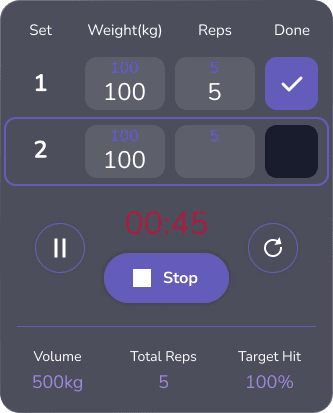

I wanted to design a product that would tackle the issues that lead so many to fail when using fitness apps with exercise.
Most people have used a fitness app at some stage in their life, but few maintain the commitment they often take. I wanted to get a better understanding of what drives people to use them, and the general opinions on their effectiveness. Here were some of the key questions I considered when gathering data for this project:
With the app being very feature-heavy, it was important to implement additional time-saving abilities that would make the process feel less involved for the user. Having recommended exercises based on previous use or predictive behaviours would not only save the user time but also help less experienced customers build an effective programme.
Another ability I wanted to add was data sharing with approved users for athletes that have a coach or personal trainer. This would allow the coach to directly programme exercises into their client's calendar and receive data on their performance, saving valuable time for both parties.
